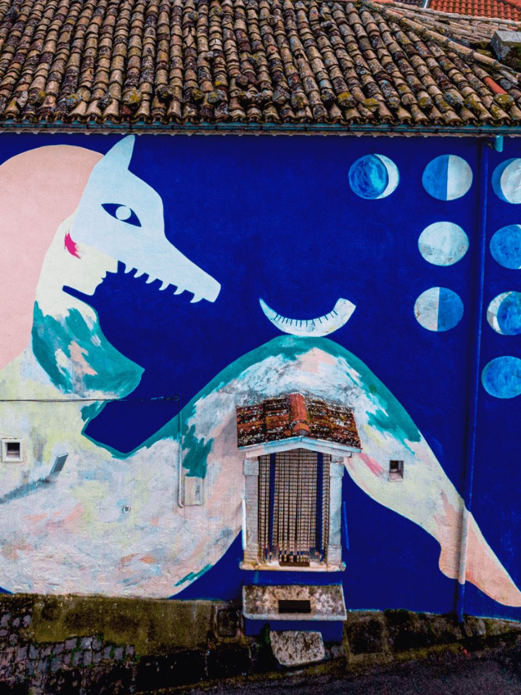
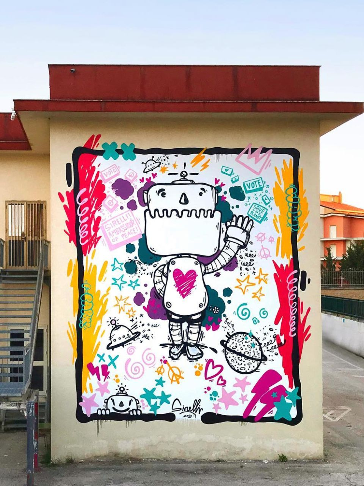
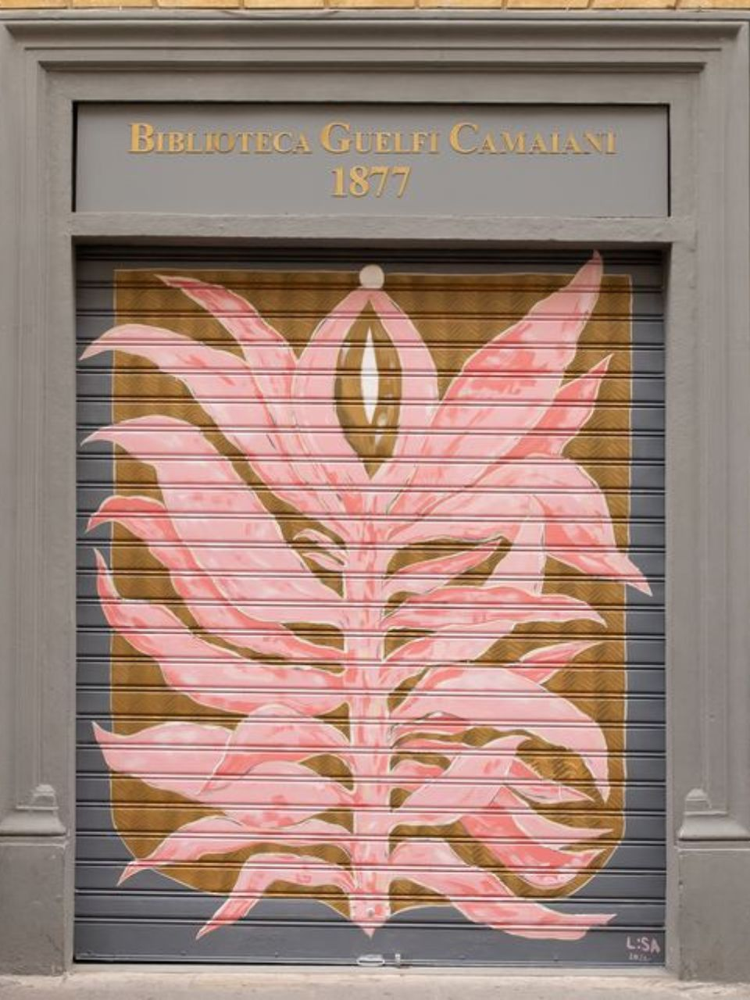
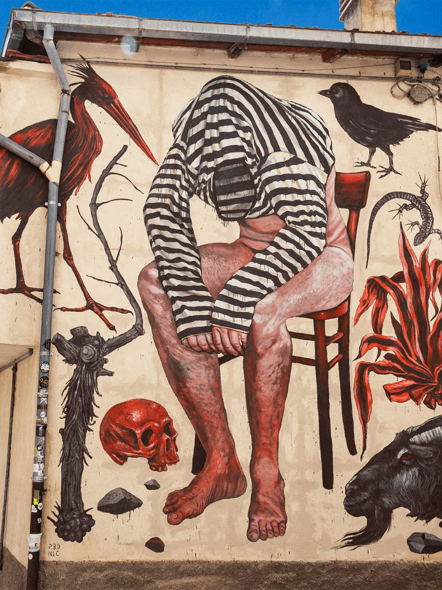
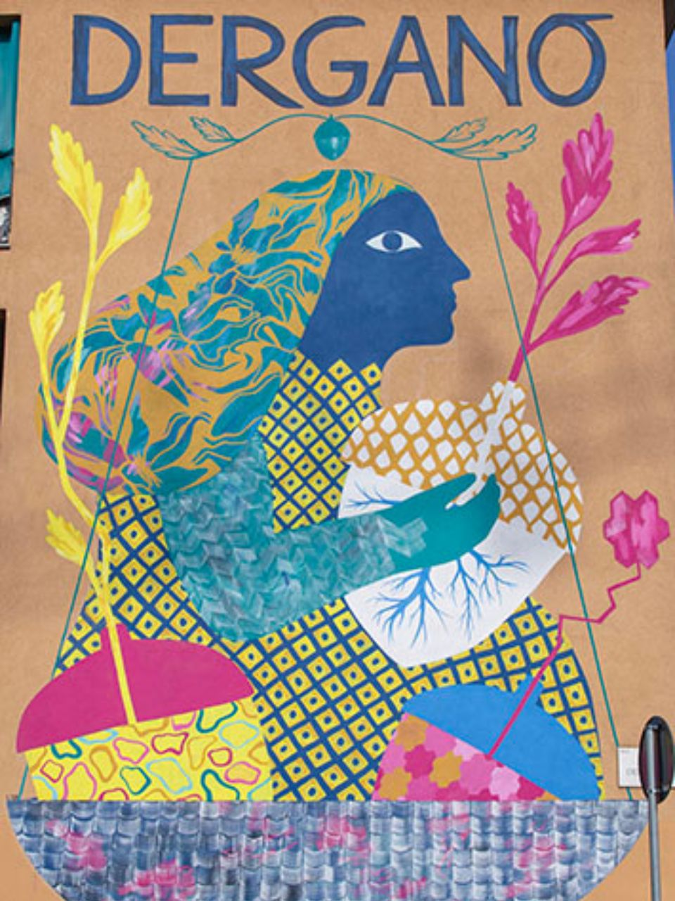

Augmented Murals
Image-tracking AR works created in collaboration with Bepart for the Museo di Arte Urbana Aumentata.
A collection of augmented reality works created in collaboration with Bepart for the Museo di Arte Urbana Aumentata. MAUA is an open-air museum where urban murals are expanded through augmented reality and experienced through the viewer’s smartphone.
Using image tracking, each mural becomes the visual trigger for a digital animation. The physical wall remains the starting point, while 3D elements, movement, sound and symbolic narratives open a second layer of interpretation on top of the painted surface.
My works explore transformation, memory, inner landscapes and regeneration, turning urban artworks into small immersive scenes suspended between the real city and a digital imaginary.
Tredicesima Luna
A horn, thirteen signs, and a threshold opening onto the hidden landscape of the unconscious. — Mural by Lisa Gelli.

Tredicesima Luna is inspired by the figure of the Janara and by the symbolic power of the moon, its phases and its cycles. When the thirteenth moon appears, time seems to fracture. A horn marked by thirteen signs emerges like an ancient calendar, a compass that does not measure space, but the mystery of the unconscious.
In augmented reality, the wall opens into a visionary passage between reality and dream. Familiar objects appear distorted and suspended in an impossible landscape, as if fragments of memory had taken form. The Janara becomes the guardian of the threshold, inviting the viewer to look inward and cross the hidden space of dreams.
OutOfStars.exe
A small cosmic traveller loses its light, until the stars gather to restart its heart. — Mural by Massimo Sirelli.

Based on Massimo Sirelli’s friendly robot with a pink heart, OutOfStars.exe transforms the mural into a cosmic journey. The robot walks lightly across its planet, until a sudden storm of lightning strikes and extinguishes its inner light.
In the silence that follows, small spacecraft arrive to help. They collect energy from the stars and pour it back into the robot’s heart, bringing it back to life. The animation turns the mural’s playful and inclusive character into a story of care, repair and renewed movement.
Pink Desire
Falling leaves are absorbed and transformed into a pearl, in an intimate journey through loss and rebirth. — Mural by Lisa Gelli.

Pink Desire expands Lisa Gelli’s mural into a fragile and intimate AR scene. Leaves fall like offerings, absorbed and transformed into a pearl. The atmosphere shifts, colours fade into grey and darker tones, while metallic sounds and a music-box melody create a suspended mood between nostalgia and unease.
The AR work reflects on the ephemeral and transient nature of reality. Through 3D animation, the shutter becomes an imaginary threshold, opening a spatial illusion inside the surface of the mural and turning it into a living passage.
Systema Munditotius
A star descends into the inner universe. The signs emerge, and the machine assembles itself. — Mural by Nicola Alessandrini.

Systema Munditotius expands Nicola Alessandrini’s mural into a symbolic mechanism of transformation. From a stone chest engraved with birds and reptiles, a vision opens: a man slowly frees himself from a prisoner’s uniform.
From the ground, a cosmic machine rises and takes shape, built from elements of the universe and activated by a celestial spark. Its movement follows the orbits of the Sun, the Earth and the planets, completing a cycle before dissolving back into the floor. When everything becomes still, the man remains — no longer a prisoner, but part of a larger universal harmony.
Derganoak
A solitary figure finds comfort in a magical acorn, surrounded by leaves and the warmth of the Dergano community. — Mural by Lisa Gelli.

Derganoak transforms the mural into a symbolic scene of belonging and regeneration. A solitary figure encounters a magical acorn, while vibrant leaves begin to bloom around it. The animation reflects on comfort, growth and community, turning the mural into a gentle image of protection and renewal.